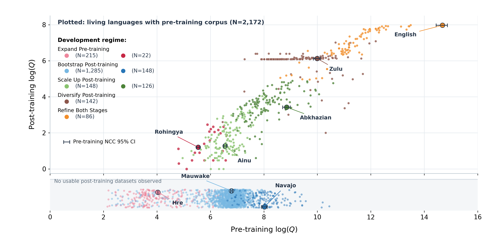
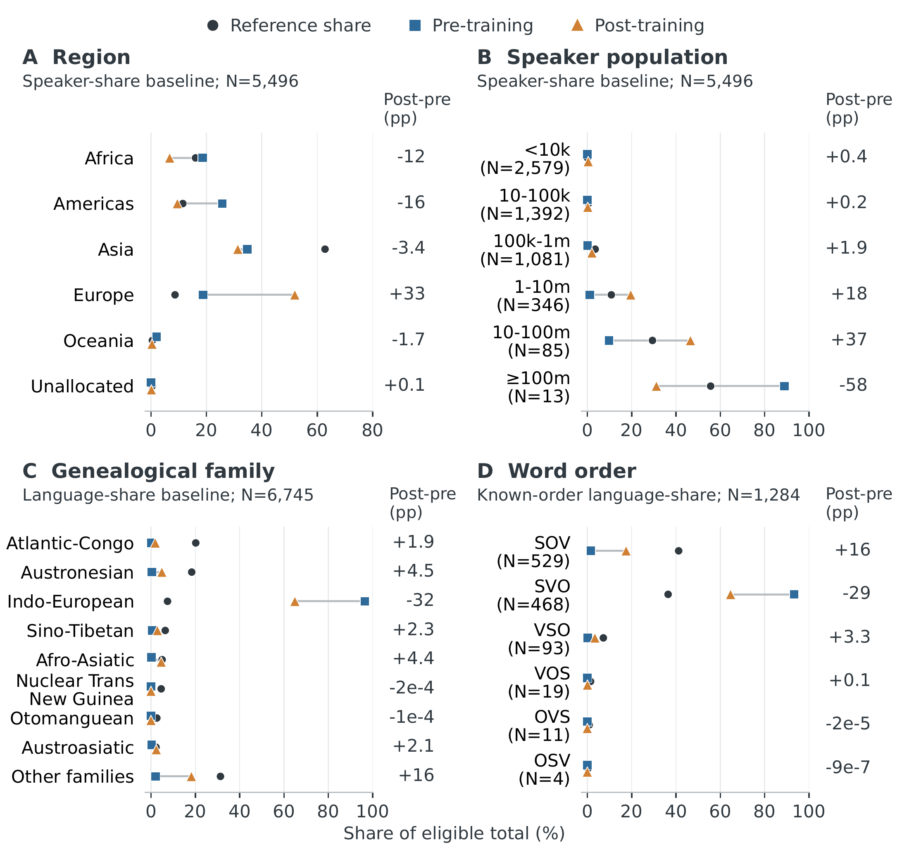

MAPP
A Multilingual Atlas of Pretraining and Post-training Data
CodeTraining Resources Differ in Both Quantity and Provenance

Across 36 pre-training and 188 post-training collections, the survey records usable resources for 2,172 and 524 living languages, respectively, out of a reference inventory of 7,084. Pre-training quantity is measured in Normalized Character Count (NCC), while post-training quantity counts response-level sample equivalents. Languages with observed resources are clustered separately within each stage using quantity and source composition; task distributions help interpret the resulting profiles. Intermediate pre-training profiles often rely on language-identification corpora, while post-training is translation-centered, ranging from small synthetic slices to reused expert translations and larger synthetic-heavy mixtures. Large totals or high expert-created shares can therefore conceal narrow supervision and dependence on shared source material. Provenance categories describe construction processes and do not directly measure data quality; post-training source and task proportions in this figure are power-transformed.
Download figureFive Priorities for Developing Language Resources

Matching the stage-specific clusters reveals that a pre-training foundation does not guarantee task-oriented supervision. Among the 2,172 plotted languages, 1,433 have intermediate or large pre-training resources but no observed usable post-training quantity, and 274 have only small post-training resources despite stronger pre-training foundations. These gaps motivate five development regimes: Expand Pre-training through quality-controlled corpus collection; Bootstrap Post-training by building initial instruction and task datasets; Scale Up Post-training beyond small, predominantly synthetic translation slices; Diversify Post-training with independently sourced supervision across tasks; and Refine Both Stages through provenance auditing, balanced task coverage, and targeted gap filling. The 142 languages in the diversification regime illustrate why substantial example counts from reused translations still leave limited supervision breadth. Together, the regimes guide resource development toward each language's specific bottleneck, with continued human contributions alongside synthetic expansion.
Download figureLinguistic Diversity Remains Unevenly Represented

Beyond individual-language bottlenecks, resource shares reveal persistent disparities across language communities. Regional and population comparisons use speaker-share baselines, while family and word-order comparisons use language-count baselines. Relative to pre-training, Europe's post-training share rises by 33 percentage points, while Africa and the Americas lose 12 and 16 points. Post-training shifts toward languages with 1-100 million speakers, yet smaller-population languages remain marginal. Atlantic-Congo and Austronesian remain underrepresented relative to their language counts; among languages with known word order, SVO remains dominant and SOV stays below its reference share despite gains. These findings motivate targeted supervision collection in underserved regions and communities, alongside broader genealogical and typological coverage. Each stage's shares are normalized separately within eligible language sets, so the percentage-point differences describe changes in representation rather than absolute gains or losses in data volume.
Download figure